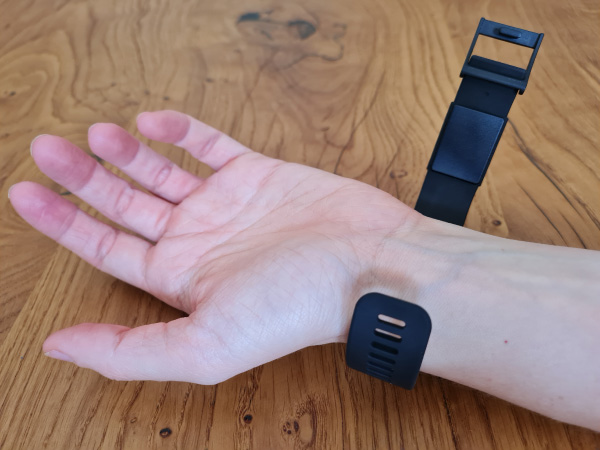
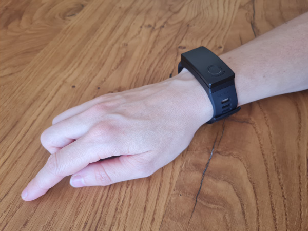

4 S’équiper et démarrer une session
Positionnement du bracelet
＋
- Les émetteurs d’ondes millimétriques se situent sous le capot de forme rectangulaire que vous pouvez apercevoir sur la partie interne de votre bracelet. Cette partie doit venir se placer sur la partie interne de votre poignet. 
- Il est important de porter votre bracelet proche de votre main car c’est à cet endroit que les récepteurs nerveux ciblés par les ondes millimétriques sont les plus nombreux. La meilleure position correspond à celle de la photo ci-dessous, dans les 5 centimètres en dessous de la main. 
Serrage du bracelet
＋
- Votre bracelet Remedee doit être en contact avec votre peau afin que les ondes millimétriques puissent y pénétrer. Le bracelet est équipé d’un capteur de proximité et si votre peau n’était pas détectée, un voyant orange clignotant vous indiquerait que le bracelet doit être replacé afin de pouvoir fonctionner.
- Attention toutefois à ne pas trop serrer votre bracelet Remedee car cela pourrait provoquer des fourmillements dans votre main et laisser des marques rouges sur votre peau.
Démarrer une session
＋
- Une fois que le bracelet est positionné, appuyez une fois sur le bouton latéral pour réveiller le bracelet.
- Si les voyants sont verts, votre bracelet est prêt à démarrer une session. Pour cela, appuyez une nouvelle fois sur le bouton latéral pour démarrer la session. Une légère vibration et des voyants violets vous indiquent que la session a été correctement démarrée.
- Durant la session, les voyants sont éteints pour préserver la batterie. Toutefois, vous pouvez presser le bouton latéral à tout moment pour connaître l’état du bracelet, ou bien consulter votre application pour connaître le temps de session restant.
- Si vous rencontrez des difficultés, une vidéo de démonstration est disponible sur la page Documents .
Compléter la session
＋
- Afin de favoriser l’efficacité de l’utilisation du bracelet Remedee, il est recommandé de faire des sessions complètes.
- Il est à noter qu’une session non complète n’apparait pas dans le compte journalier de sessions de votre application Remedee.
Recharger votre bracelet en fin de session
＋
- Après chaque session, le bracelet doit être replacé dans son étui pour être rechargé. En effet, la batterie du bracelet permet d’effectuer une seule session.
- Votre application vous indique le pourcentage de charge de votre bracelet.
- L’étui du bracelet permet de recharger le bracelet 5 fois.
- Lorsque l’étui de charge est complètement déchargé, il doit être branché sur une prise secteur.